Chocolate chip cookies
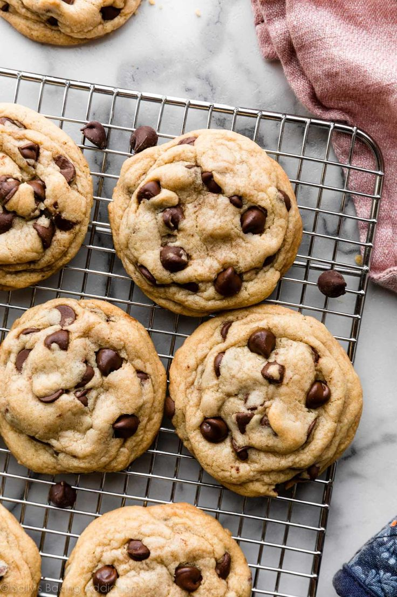
Here’s a step-by-step the chocolate chip cookie recipe:
- Ingredients:
- 2 1/4 cups all-purpose flour
- 1/2 teaspoon baking soda
- 1 cup (2 sticks) unsalted butter, at room temperature
- 1/2 cup granulated sugar
- 1 cup packed light-brown sugar
- 1 teaspoon salt
- 2 teaspoons pure vanilla extract
- 2 large eggs
- 2 cups semisweet and/or milk chocolate chips
Preheat oven to 350°F (180°C). Line two baking sheets with parchment paper or silicone mats. Whisk together flour and baking soda in a small bowl. Set aside. Beat butter, granulated sugar, and brown sugar in a large bowl until light and fluffy (about 2-3 minutes). Add eggs and vanilla to the butter mixture, mixing until combined. Gradually add flour mixture to the wet ingredients, mixing until just combined. Stir in chocolate chips until evenly distributed. Scoop dough onto the prepared baking sheets, spacing them about 2 inches apart. Bake for 9-11 minutes or until edges are golden brown. The center should still be soft. Cool on the baking sheet for 2 minutes, then transfer to a wire rack to cool completely. That’s it! Step-by-step instructions to get you to fresh, warm chocolate chip cookies!
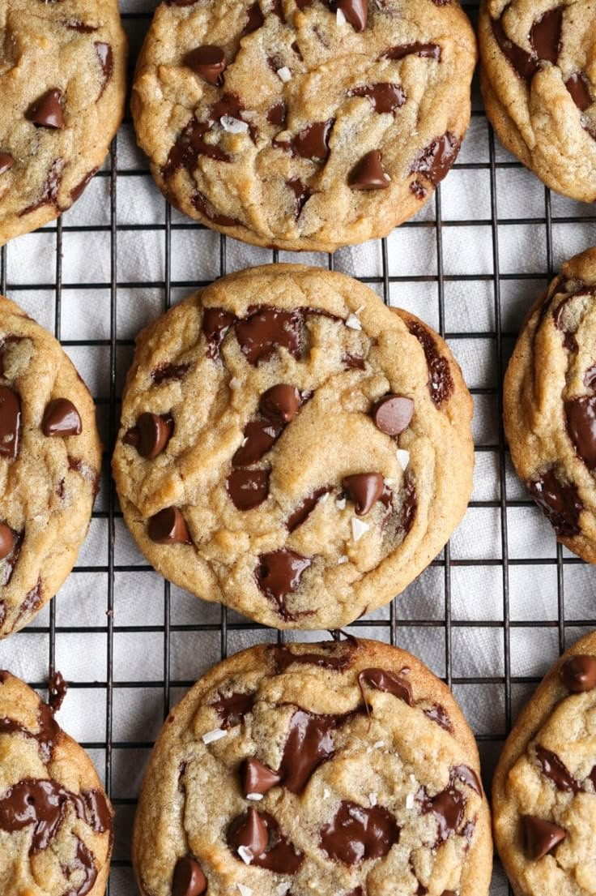
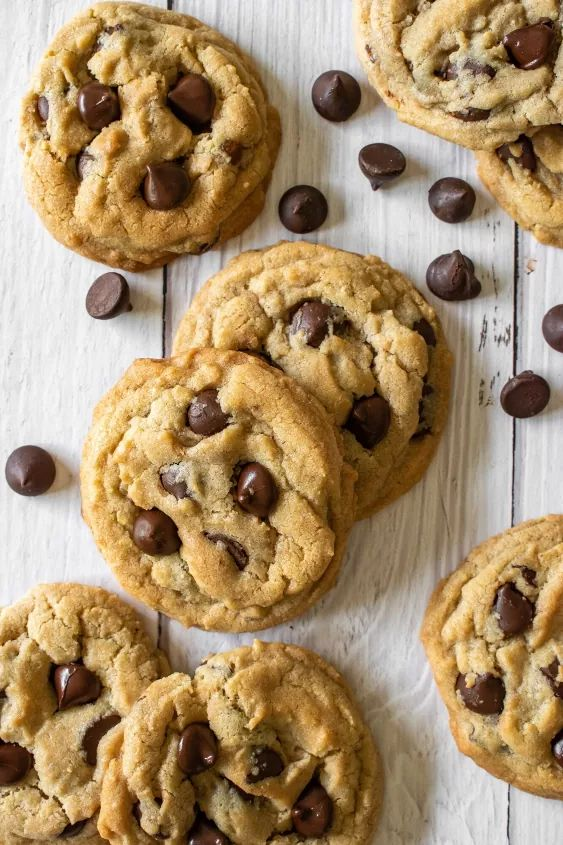
Watch how to make the perfect chocolate chip cookies step-by-step! From mixing the dough to baking golden, chewy cookies, this video will guide you through the process effortlessly.
Chocolate chips cookiesChocolate cookies
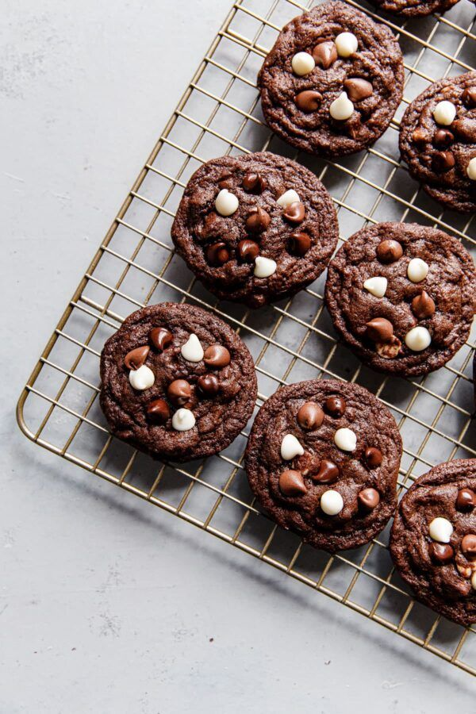
Here’s a step-by-step recipe for Chocolate Cookies:
- Ingredients:
- 2 1/4 cups all-purpose flour
- 1/2 teaspoon baking soda
- 1/2 teaspoon salt
- 3/4 cup unsalted butter, at room temperature
- 1 cup granulated sugar
- 1/2 cup brown sugar, packed
- 1 large egg
- 1 teaspoon vanilla extract
- 1/2 cup unsweetened cocoa powder
- 1 cup chocolate chips (semi-sweet or milk chocolate)
Preheat oven to 350°F (180°C). Line two baking sheets with parchment paper or silicone mats. Whisk together flour, baking soda, and salt in a small bowl. Set aside. Beat the butter, granulated sugar, and brown sugar in a large bowl until creamy and smooth. Add the egg and vanilla extract, and mix until fully incorporated. Sift in the cocoa powder and mix until the dough is smooth and all ingredients are well combined. Gradually add the dry ingredients to the wet mixture, stirring until just combined. Fold in the chocolate chips, ensuring they are evenly distributed throughout the dough. Scoop dough into small balls (about 1 to 1.5 inches in size), placing them about 2 inches apart on the baking sheets. Bake for 8-10 minutes, or until the edges are set and the centers look slightly soft. Cool on the baking sheet for a few minutes, then transfer to a wire rack to cool completely. These chocolate cookies are rich and indulgent with the perfect chewy texture and pockets of melty chocolate chips. Enjoy!
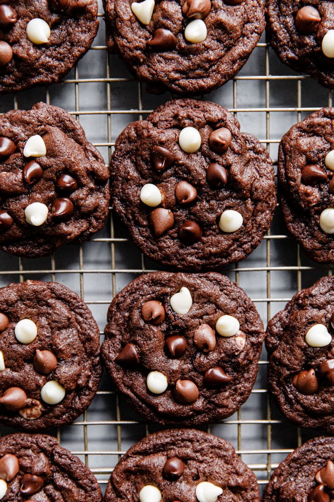
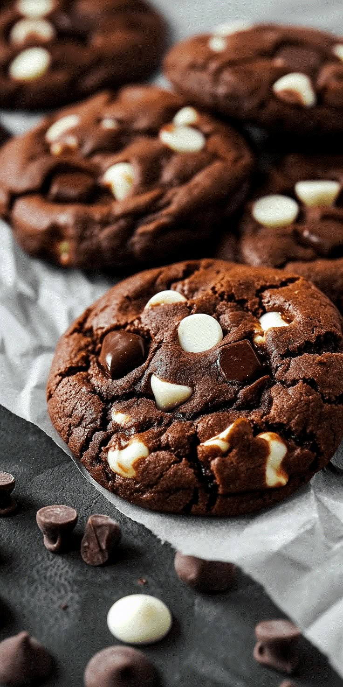
Indulge in rich, chocolaty goodness with this simple recipe. This video shows how to bake perfectly soft and decadent chocolate cookies every time.
Chocolate cookiesCrinkle chocolate cookies
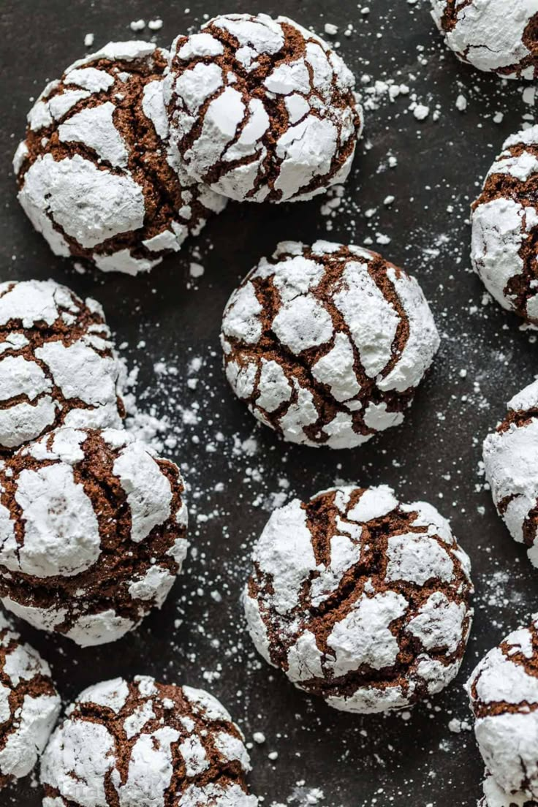
Here’s a step-by-step recipe for Chocolate Crinkle Cookies:
- Ingredients:
- 1 cup all-purpose flour
- 1/2 teaspoon baking powder
- 1/4 teaspoon salt
- 1/2 cup unsweetened cocoa powder
- 1/2 cup granulated sugar
- 1/2 cup brown sugar, packed
- 1/2 cup vegetable oil
- 2 large eggs
- 2 teaspoons vanilla extract
- 1/2 cup powdered sugar (for rolling)
Preheat oven to 350°F (180°C). Line two baking sheets with parchment paper or silicone mats. Whisk together flour, baking powder, salt, and cocoa powder in a small bowl. Set aside. Beat the granulated sugar, brown sugar, and vegetable oil in a large bowl until smooth. Add the eggs and vanilla extract to the sugar mixture, and mix until fully combined. Gradually add the dry ingredients to the wet mixture, mixing until just combined. Chill the dough in the refrigerator for at least 30 minutes to make it easier to roll. Scoop dough into small balls (about 1-inch in size) and roll each ball in powdered sugar to coat generously. Place the dough balls on the prepared baking sheets, spacing them about 2 inches apart. They will spread as they bake. Bake for 8-10 minutes, or until the tops of the cookies have cracked and the edges are set. Cool on the baking sheet for 2 minutes, then transfer to a wire rack to cool completely. These Chocolate Crinkle Cookies have a rich, fudgy interior with a soft, chewy texture, and they get their signature "crackle" from the powdered sugar coating. Enjoy!
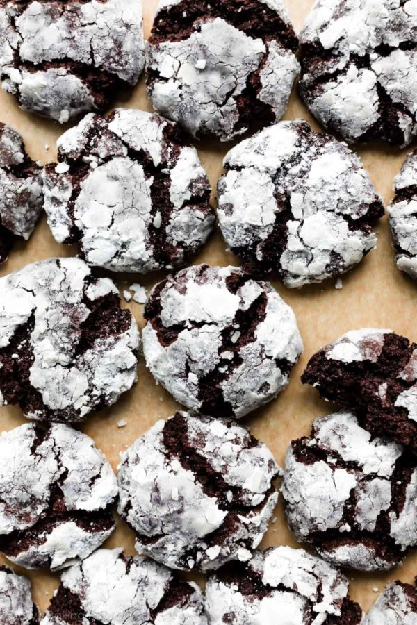
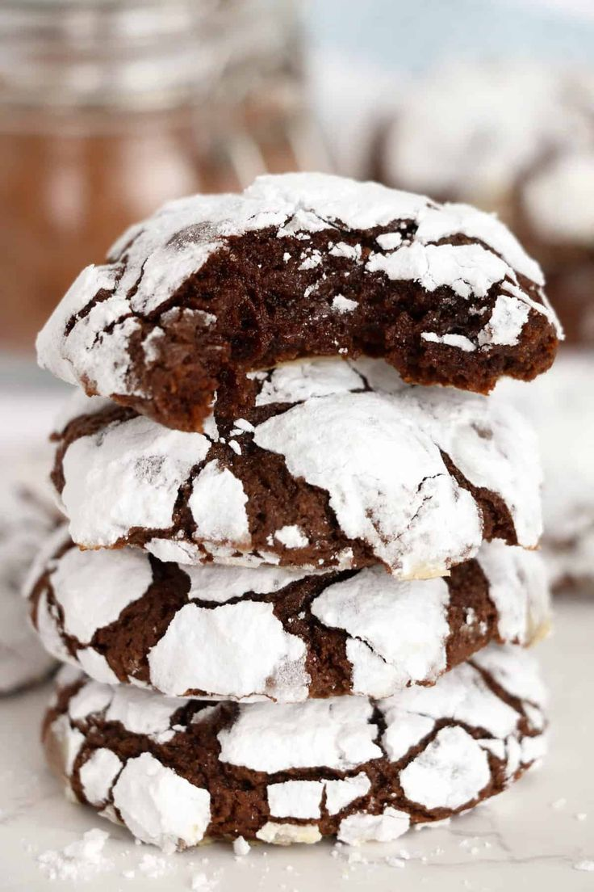
Watch how to bake these fudgy crinkle chocolate cookies with their signature crackled surface and rich,
chocolaty flavor. Perfect for any chocolate lover!
Crinkel cookies
Raspberry chocolate chip cookies
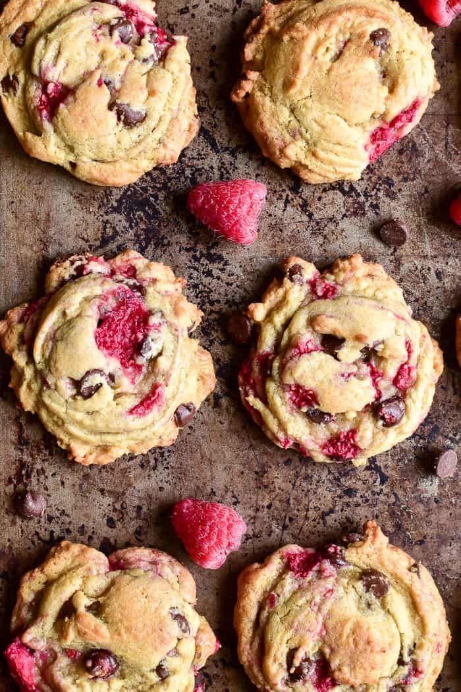
Here’s a step-by-step recipe for Raspberry Chocolate Chip Cookies:
- Ingredients:
- 2 1/4 cups all-purpose flour
- 1/2 teaspoon baking soda
- 1/4 teaspoon salt
- 1 cup unsalted butter, at room temperature
- 3/4 cup granulated sugar
- 1/2 cup brown sugar, packed
- 1 large egg
- 1 teaspoon vanilla extract
- 1 cup fresh or frozen raspberries (if using frozen, don’t thaw)
- 1 cup semi-sweet or milk chocolate chips
Preheat the oven to 350°F (180°C). Line two baking sheets with parchment paper or silicone mats. Whisk the dry ingredients: In a small bowl, whisk together the flour, baking soda, and salt. Set aside. Cream the butter and sugars: In a large mixing bowl, beat together the butter, granulated sugar, and brown sugar until smooth and creamy. Add the egg and vanilla: Add the egg and vanilla extract to the butter mixture, and beat until fully combined. Add the dry ingredients: Gradually add the dry ingredients to the wet mixture, mixing until just combined. Fold in the raspberries and chocolate chips: Gently fold in the raspberries and chocolate chips. Be careful not to crush the raspberries too much, as they’ll release juice and may color the dough. Shape the dough: Scoop out about 1-inch portions of dough and roll them into balls. Place them about 2 inches apart on the prepared baking sheets. Bake for 10-12 minutes: Bake until the edges are golden and the centers are set, but soft. The cookies will firm up as they cool. Cool: Let the cookies cool on the baking sheets for a couple of minutes, then transfer them to a wire rack to cool completely. These Raspberry Chocolate Chip Cookies are a delicious combination of tart raspberries and sweet chocolate, with a chewy texture. Enjoy!
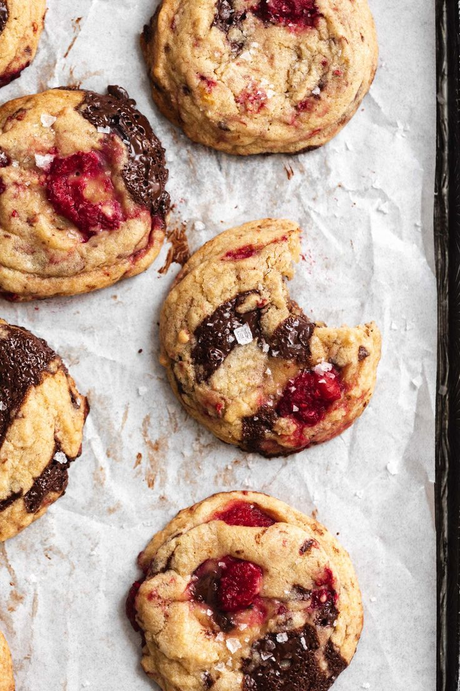
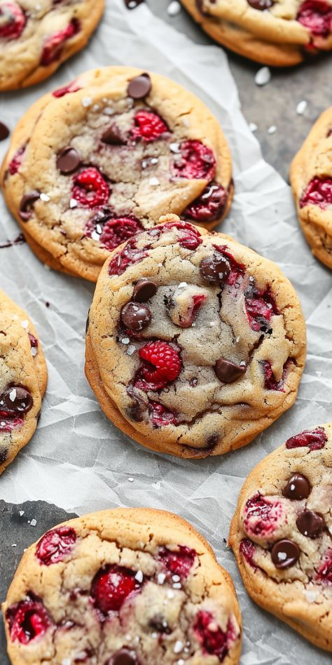
Discover the delightful combination of sweet raspberries and rich chocolate chips. Watch this video to create cookies that are fruity, chocolaty, and absolutely irresistible!
Rspberry chocolateChip cookiesLemon cookies
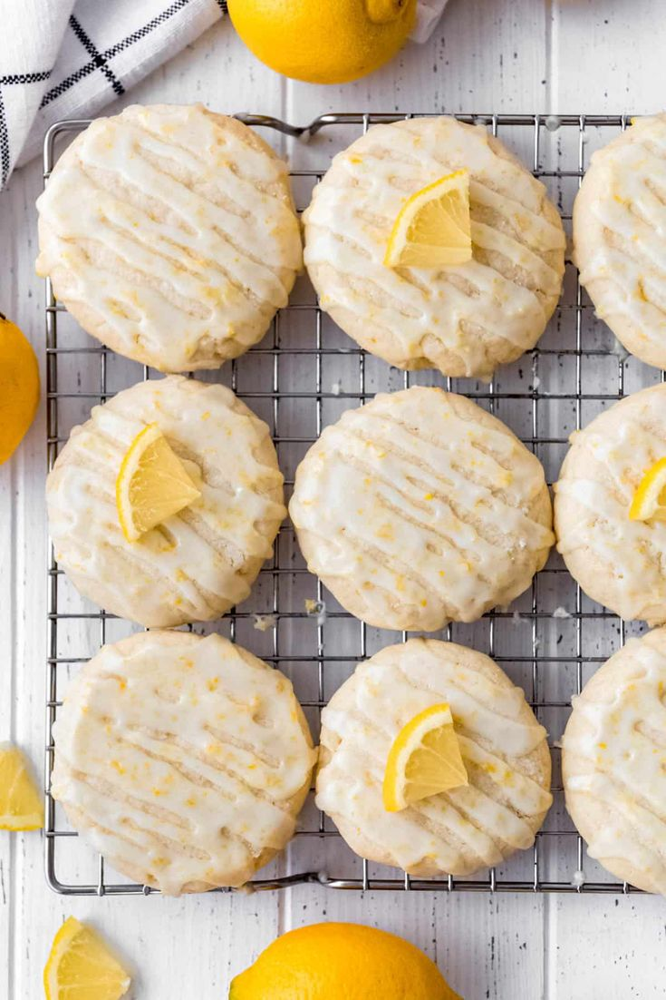
Here’s a step-by-step Lemon Cookies recipe:
- Ingredients:
- 2 1/4 cups all-purpose flour
- 1/2 teaspoon baking soda
- 1/4 teaspoon baking powder
- 1/2 teaspoon salt
- 1 cup (2 sticks) unsalted butter, at room temperature
- 1 cup granulated sugar
- 1 large egg
- 2 tablespoons fresh lemon juice
- 1 tablespoon lemon zest
- 1 teaspoon vanilla extract
- 1/2 cup powdered sugar (for rolling) Steps:
Preheat oven to 350°F (180°C). Line two baking sheets with parchment paper or silicone mats. Whisk together flour, baking soda, baking powder, and salt in a small bowl. Set aside. Beat butter and granulated sugar in a large bowl until light and fluffy. Add the egg, lemon juice, lemon zest, and vanilla extract to the butter mixture, and mix until combined. Gradually add the dry ingredients to the wet mixture, mixing until just combined. Roll dough into small balls (about 1-inch in size), then roll them in powdered sugar to coat. Place dough balls on the baking sheets, spacing them about 2 inches apart. Bake for 8-10 minutes or until the edges are set and the tops are cracked. Cool on the baking sheet for 2 minutes, then transfer to a wire rack to cool completely. These lemon cookies will have a soft, tender bite with a zesty, refreshing lemon flavor! Enjoy!
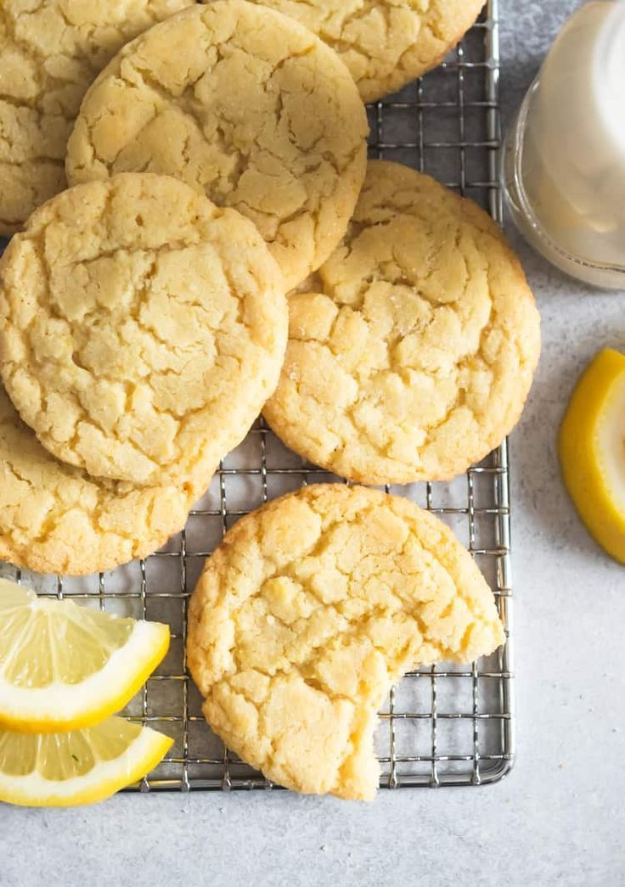
Make The Lemon Cookie Icing Here is what you need to grab to make your lemon icing -powdered sugar (or confectioners sugar), vanilla extract, lemon zest and juice. Once the cookies have cooled, go ahead and make your lemon icing. This icing is so simple to make and adds that extra punch of lemon flavor to this lemon cookie recipe. In a small mixing bowl, combine the fresh lemon juice, lemon zest, and powdered sugar and whisk until it’s smooth. If you are finding the lemon glaze is too thick add a touch more liquid to thin it our. Or if it’s too thin, add a a little more powdered sugar. You can ice these cookies with an offset spatula or simply give them a dunk into your lemon glaze which is my preferred method, letting the excess drip off.
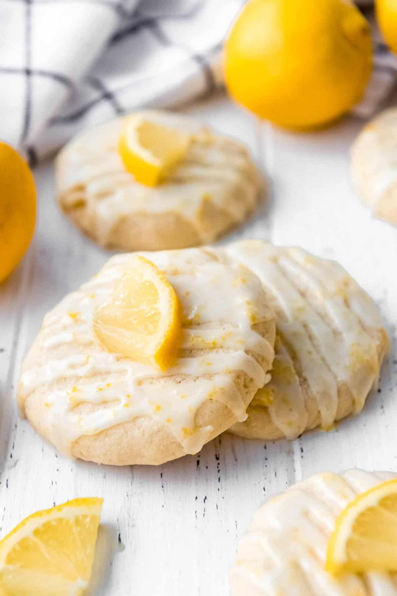
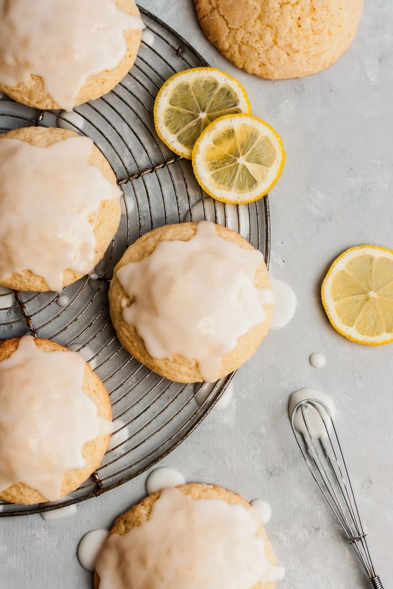
Brighten your day with these zesty lemon cookies! This video takes you through making soft cookies topped
with a refreshing lemon glaze.
Lemon cookies
Peanut butter cookies
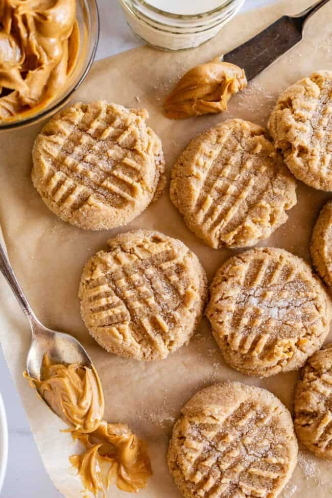
Here’s a step-by-step recipe for Peanut Butter Cookies:
- Ingredients:
- 1 cup peanut butter (creamy or chunky, based on preference)
- 3/4 cup granulated sugar
- 1/2 cup brown sugar, packed
- 1 large egg
- 1 teaspoon vanilla extract
- 1 1/2 cups all-purpose flour
- 1/2 teaspoon baking soda
- 1/4 teaspoon salt
- 1/2 cup chocolate chips (optional)
- Additional sugar for rolling (optional)
Preheat oven to 350°F (180°C). Line two baking sheets with parchment paper or silicone mats. Mix the wet ingredients: In a large bowl, beat together the peanut butter, granulated sugar, and brown sugar until smooth and creamy. Add the egg and vanilla extract, and beat until fully combined. Combine dry ingredients: In a separate bowl, whisk together the flour, baking soda, and salt. Add dry ingredients to wet ingredients: Gradually add the dry ingredients to the wet ingredients, mixing until just combined. Shape the dough: Scoop about 1-inch portions of dough and roll them into balls. If desired, roll each ball in additional granulated sugar for extra sweetness and a little crunch. Flatten the cookies: Place the dough balls on the prepared baking sheets, spacing them about 2 inches apart. Use a fork to gently flatten the cookies, making a crisscross pattern on top. Bake for 8-10 minutes, or until the edges are slightly golden. The cookies will firm up as they cool, so don't worry if they still look a little soft when you take them out. Cool on the baking sheet for 2 minutes, then transfer to a wire rack to cool completely. These Peanut Butter Cookies are soft, slightly chewy, and packed with peanut flavor. If you want, you can add chocolate chips to the dough or drizzle some melted chocolate on top for an extra treat. Enjoy!
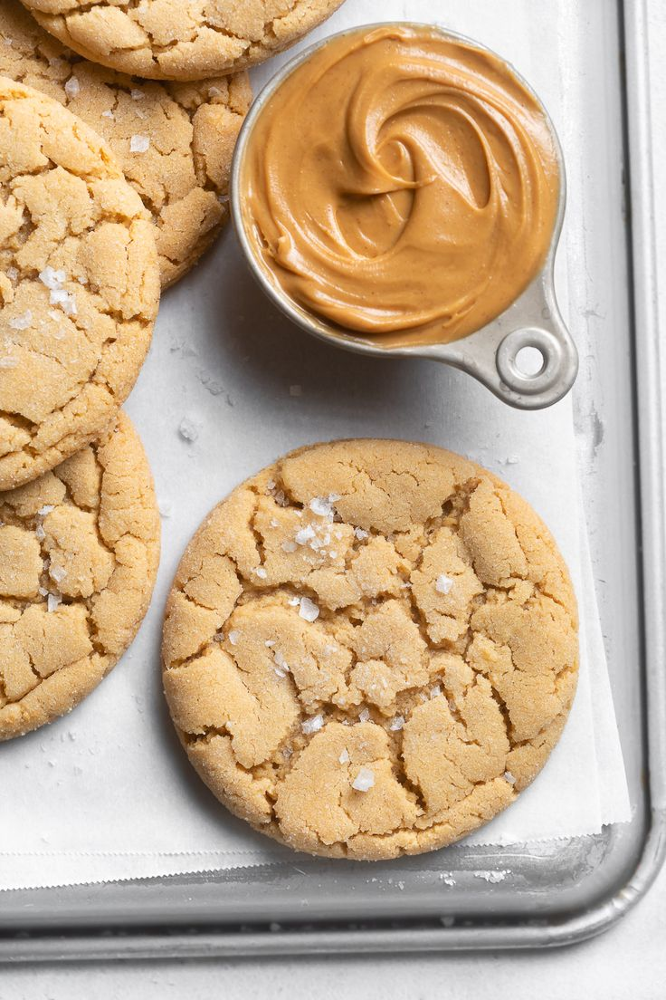
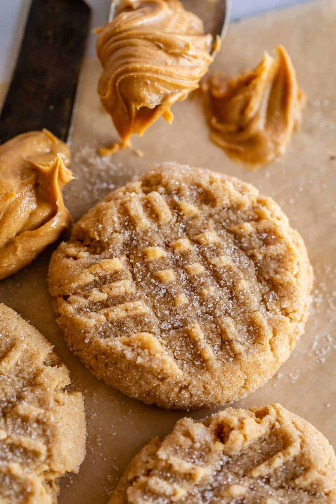
Whip up these classic peanut butter cookies in no time! This video guides you through making soft, nutty, and deliciously satisfying treats for any occasion.
Peanut butter cookiesSalted caramel cookies
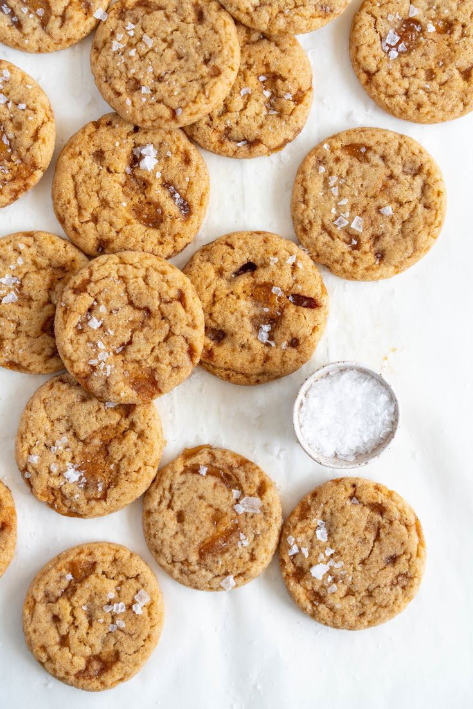
Here’s a step-by-step recipe for Salted Caramel Cookies:
- Ingredients:
- For the Cookie Dough:
- 2 1/4 cups all-purpose flour
- 1 teaspoon baking soda
- 1/2 teaspoon salt
- 1 cup (2 sticks) unsalted butter, at room temperature
- 3/4 cup granulated sugar
- 1 cup brown sugar, packed
- 2 large eggs
- 1 teaspoon vanilla extract
- For the Salted Caramel:
- 1/2 cup caramel sauce (store-bought or homemade)
- 1/4 teaspoon sea salt (for sprinkling)
Make the Cookie Dough: Preheat oven to 350°F (180°C). Line two baking sheets with parchment paper or silicone mats. Whisk together flour, baking soda, and salt in a small bowl. Set aside. Beat the butter, granulated sugar, and brown sugar in a large bowl until creamy and light. Add the eggs and vanilla extract, and beat until combined. Gradually add the dry ingredients to the wet mixture, mixing until just combined. Fold in chocolate chips (if using).
Assemble the Cookies:
Scoop the dough into small balls (about 1 inch in diameter) and place them about 2 inches apart on the prepared baking sheets. Press a small indentation in the center of each dough ball using your thumb or the back of a spoon. Spoon about 1/2 to 1 teaspoon of caramel sauce into the center of each cookie indentation. Sprinkle a pinch of sea salt over the caramel-filled cookies.
Bake the Cookies:
Bake for 10-12 minutes, or until the edges are golden brown and the cookies are set. Cool on the baking sheet for 2 minutes, then transfer to a wire rack to cool completely. These Salted Caramel Cookies are sweet, salty, and buttery, with the rich flavor of caramel complemented by a touch of sea salt. Enjoy!
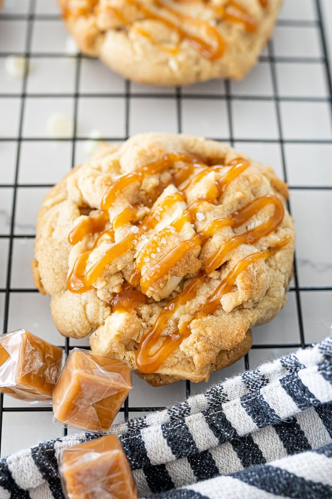
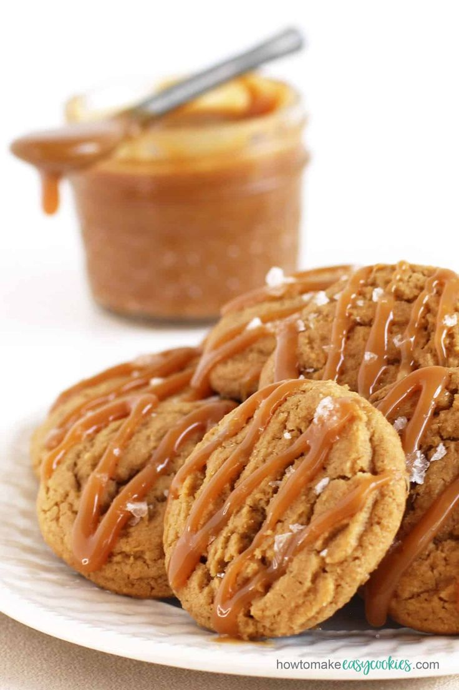
Get ready to bake cookies with a luscious caramel center and a hint of sea salt. This video demonstrates how to achieve the perfect balance of sweet and salty.
Slated caramel cookiesGinger cookies
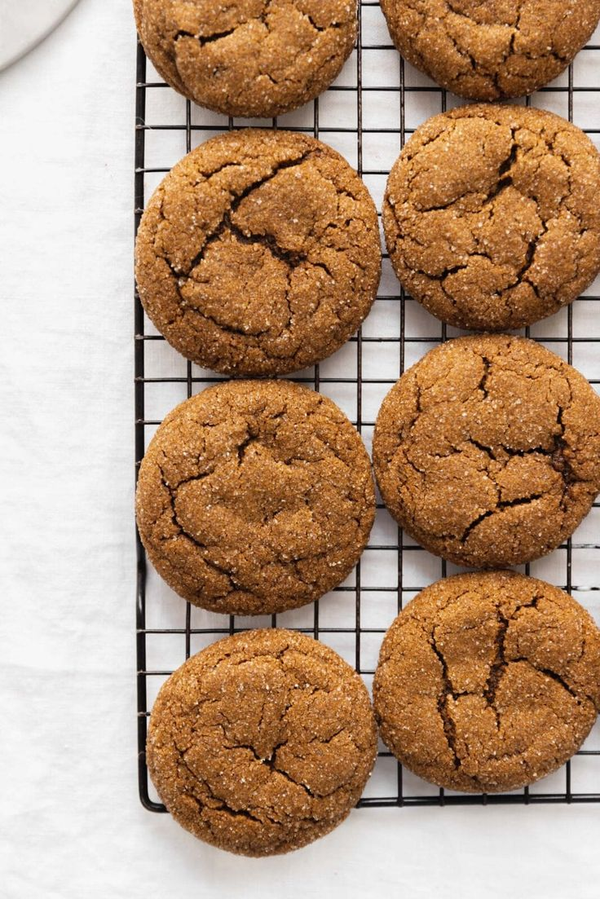
Here’s a step-by-step recipe for Ginger Cookies:
- Ingredients:
- 2 1/4 cups all-purpose flour
- 1 teaspoon baking soda
- 1 1/2 teaspoons ground ginger
- 1 teaspoon ground cinnamon
- 1/2 teaspoon ground cloves
- 1/4 teaspoon salt
- 3/4 cup unsalted butter, at room temperature
- 1 cup granulated sugar (plus extra for rolling)
- 1 large egg
- 1/4 cup molasses
- 1 teaspoon vanilla extract
Preheat oven to 350°F (180°C). Line two baking sheets with parchment paper or silicone mats. Whisk together flour, baking soda, ginger, cinnamon, cloves, and salt in a small bowl. Set aside. Beat the butter and sugar in a large bowl until creamy and light. Add the egg, molasses, and vanilla extract, and beat until well combined. Gradually add the dry ingredients to the wet mixture, mixing until just combined. Shape the dough into small balls (about 1-inch in size) and roll them in granulated sugar to coat. Place the dough balls on the prepared baking sheets, spacing them about 2 inches apart. Gently press them down with the bottom of a glass or your fingers to flatten slightly. Bake for 8-10 minutes, or until the cookies are set and slightly cracked on top. Cool on the baking sheet for 2 minutes, then transfer to a wire rack to cool completely. These ginger cookies will be soft, slightly chewy, and full of warm, spiced flavor. Enjoy!
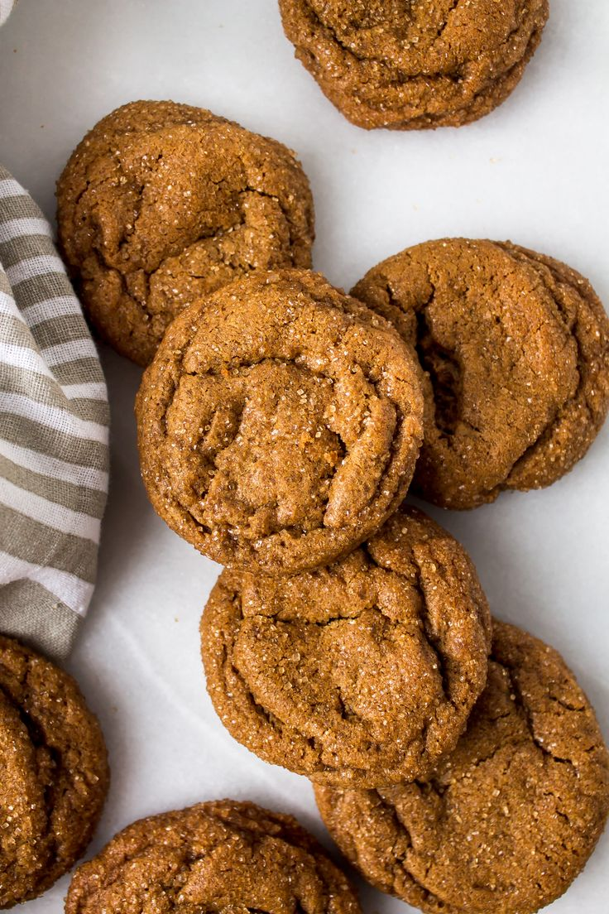
To make it creamy your best choice is the butter cream!
Make the Buttercream Frosting:Beat the butter in a large mixing bowl until light and fluffy (about 2 minutes). Gradually add powdered sugar, 1/2 cup at a time, beating until smooth after each addition. Add vanilla extract, pinch of salt, and 2 tablespoons of heavy cream or milk, and continue to beat until smooth and creamy. Add more milk, 1 teaspoon at a time, if you prefer a softer consistency. Assemble the Cookies: Frost the cooled ginger cookies with a generous swirl of buttercream frosting. You can use a piping bag for a more decorative touch or simply spread it on with a knife. Optionally, sprinkle a little cinnamon or ground ginger on top of the frosting for extra flavor and decoration. These Ginger Cookies with Buttercream Frosting are a perfect combination of spicy, soft cookies with a creamy, sweet frosting that adds a delightful richness. Enjoy!
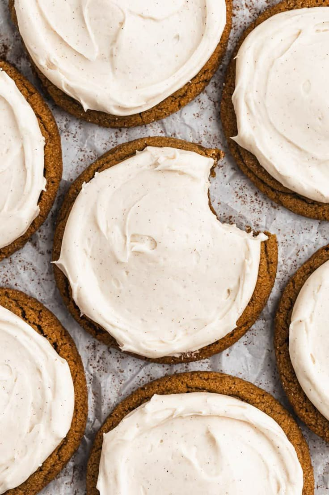
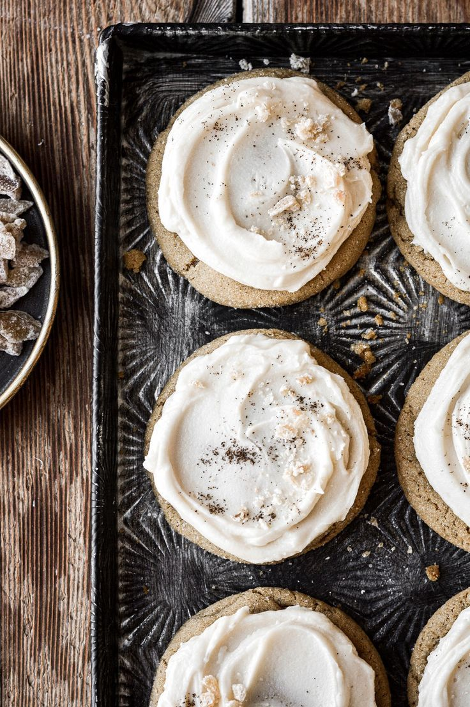
Warm, spiced, and perfect for any season—this video shows you how to bake soft and chewy ginger cookies with a hint of molasses.
Ginger cookiesBrookies
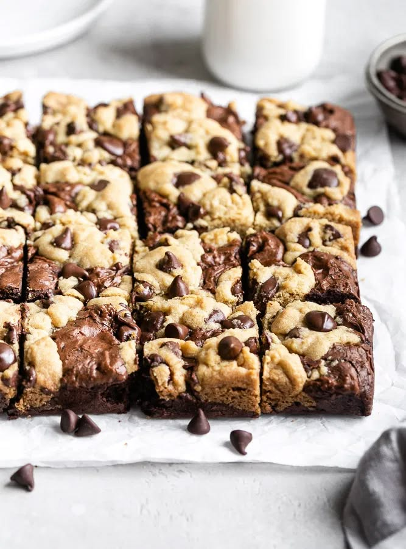
Here’s a step-by-step recipe for Brookies (a delicious combination of brownies and chocolate chip cookies in one treat!):
- Ingredients:
- For the Brownie Layer:
- 1/2 cup (1 stick) unsalted butter
- 1 cup granulated sugar
- 2 large eggs
- 1 teaspoon vanilla extract
- 1/3 cup unsweetened cocoa powder
- 1/2 cup all-purpose flour
- 1/4 teaspoon salt
- 1/4 teaspoon baking powder
- 1/2 cup chocolate chips (optional, for extra richness)
- For the Cookie Layer:
- 1/2 cup (1 stick) unsalted butter, at room temperature
- 1/2 cup granulated sugar
- 1/2 cup packed light-brown sugar
- 1 large egg
- 1 teaspoon vanilla extract
- 1 1/4 cups all-purpose flour
- 1/2 teaspoon baking soda
- 1/4 teaspoon salt
- 1 cup semi-sweet chocolate chips
Steps:
Preheat oven to 350°F (180°C). Grease or line an 8x8-inch baking pan with parchment paper. Make the Brownie Layer: Melt the butter in a microwave-safe bowl or on the stovetop. Once melted, let it cool slightly. Stir in granulated sugar, eggs, and vanilla extract into the melted butter until combined. Add cocoa powder, flour, salt, and baking powder. Mix until smooth and well combined. Fold in chocolate chips (if using). Pour the brownie batter into the prepared pan, spreading it evenly. Make the Cookie Layer: Beat the butter and both sugars in a medium bowl until light and fluffy. Add the egg and vanilla extract, and beat until combined. Whisk together flour, baking soda, and salt in a separate bowl, then gradually add to the wet mixture. Mix until just combined. Fold in chocolate chips. Drop spoonfuls of the cookie dough on top of the brownie batter in the pan. Gently spread it out with the back of a spoon, but don’t worry about covering the brownie layer completely. Bake for 25-30 minutes, or until a toothpick inserted into the center comes out mostly clean (with a few crumbs). The top should be golden, and the edges of the cookie dough should be slightly crispy. Cool in the pan on a wire rack before cutting into squares. Enjoy your Brookies, a perfect combination of chewy brownies and soft, gooey cookies!
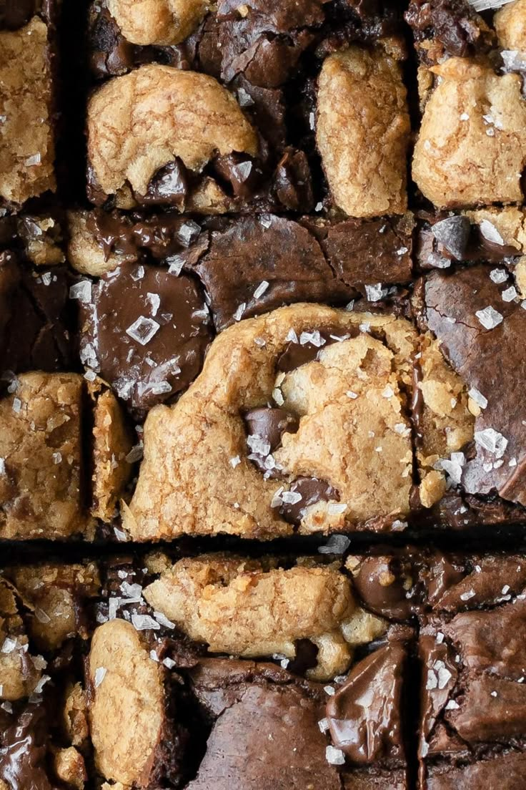
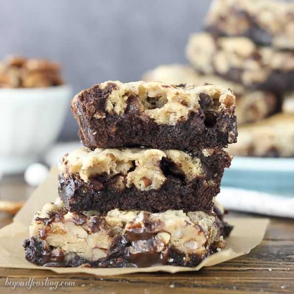
Half brownie, half cookie—brookies are the best of both worlds! Watch this video to make these decadent, chewy treats that everyone will love.
Brookies
Brownies

Here’s a step-by-step recipe for Classic Brownies:
- Ingredients:
- 1/2 cup (1 stick) unsalted butter
- 1 cup granulated sugar
- 2 large eggs
- 1 teaspoon vanilla extract
- 1/3 cup unsweetened cocoa powder
- 1/2 cup all-purpose flour
- 1/4 teaspoon salt
- 1/4 teaspoon baking powder
- 1/2 cup chocolate chips (optional, for extra richness) Steps:
Preheat oven to 350°F (180°C). Grease or line a 9x9-inch baking pan with parchment paper. Melt the butter in a microwave-safe bowl or on the stovetop, then let it cool slightly. Mix together sugar, eggs, and vanilla extract in a large bowl until smooth and well combined. Add the melted butter to the sugar and egg mixture and stir until fully incorporated. Sift together cocoa powder, flour, salt, and baking powder in a separate bowl, then add to the wet ingredients. Stir until just combined. Fold in chocolate chips (if using), making sure they are evenly distributed. Pour the batter into the prepared pan, spreading it evenly. Bake for 20-25 minutes, or until a toothpick inserted into the center comes out with a few moist crumbs (not wet batter). For fudgy brownies, check at 20 minutes. Cool in the pan on a wire rack before cutting into squares. Enjoy your rich, fudgy brownies! If you like them extra gooey, don’t overbake them—take them out when they’re still slightly underdone for the perfect chewy texture.
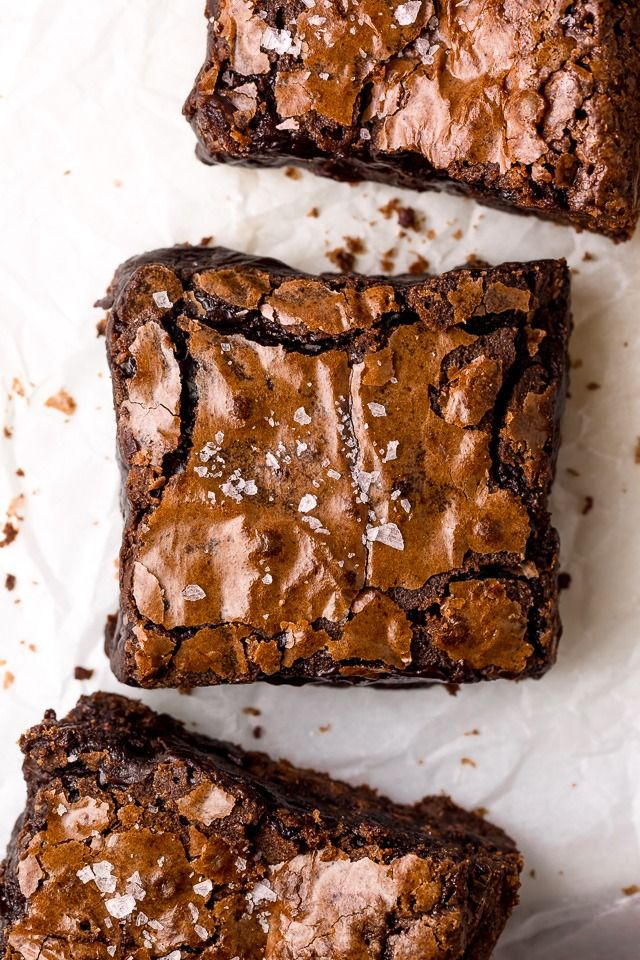
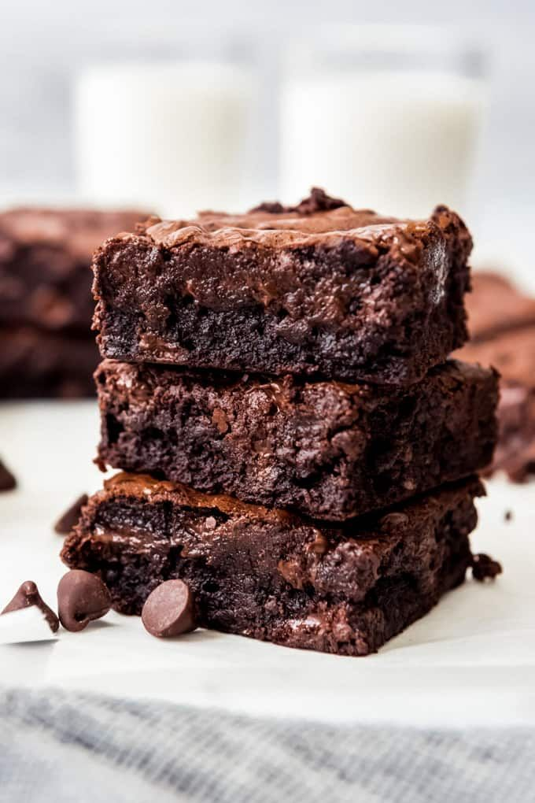
Learn to make rich, fudgy brownies with this step-by-step guide. Whether you like them gooey or firm, this video has you covered!
BrowniesBack to the top